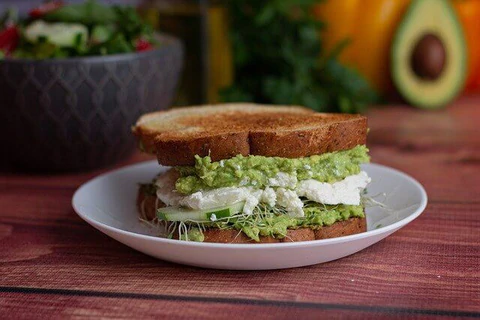

A nice little spin on the trendy avocado toast, add some cottage cheese for extra protein and everything bagel for the perfect taste
Ingredients
- 2 slices of bread
- 1/2 Avocado - sliced
- 1/4 cup parmesan cheese - shredded
- Everything bagel seasoning - for taste
- 1/2 cup cottage cheese (full fat, it's really the best)
- 1/4 cup green onion - chopped
- 1 cup blueberries - whole
Nutrition:
- Protein: 40g
- Fat: 30g
- Carbs: 78g
Instructions
- Fry eggs as desired
- Toast the bread to liking
- Spread avocado on bread; add bagel seasoning
- Add 1 egg to each slide; top with parmesan and green onion
- Add cottage cheese and blueberries to the side
- Enjoy!
Home